ST58 - Systèmes complexes et critiques
à logiciels prépondérants
Introduction à la séquence thématique
2A Cursus Ingénieurs
- ST5 : Modélisation fonctionnelle et régulation
CentraleSupelec - Université Paris-Saclay - 2025/2026
CentraleSupelec - Université Paris-Saclay - 2025/2026
Idir AIT SADOUNE

-
Docteur en Informatique diplômé par l'ENSMA en 2010.
-
Thèse sur la
modélisation et la vérification des services
par une approche basée sur le raffinement et sur la preuve.
-
Thèse sur la
modélisation et la vérification des services
-
Enseignant au sein du département informatique
de CentraleSupelec - Université Paris-Saclay. -
Chercheur membre des pôles Modèles et Preuve
du LMF - Laboratoire Méthodes Formelles.
Les responsables de la ST

Discussion autours du contenu de la ST
et des attentes des étudiants

Le logiciel informatique


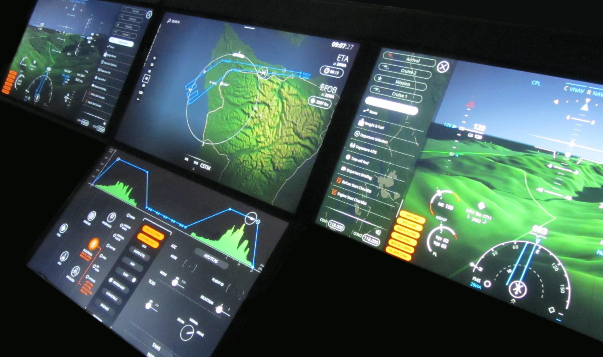


Cycle de développement
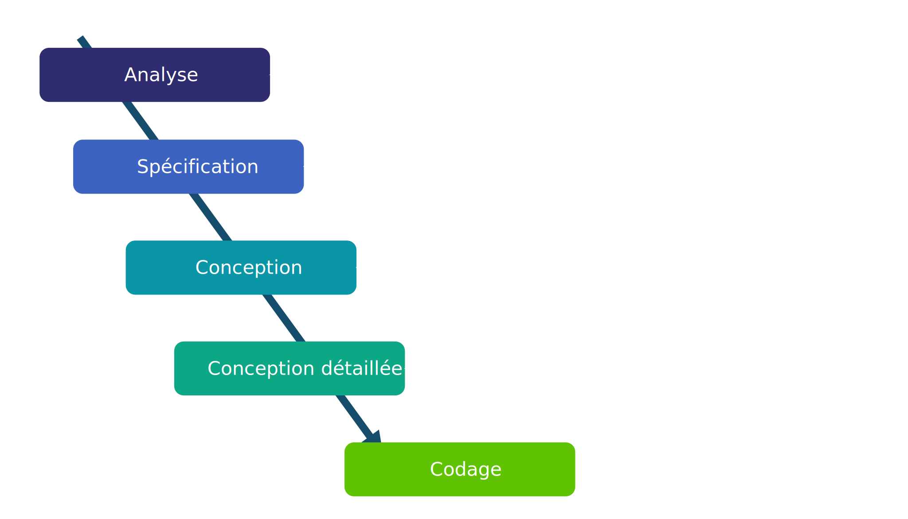
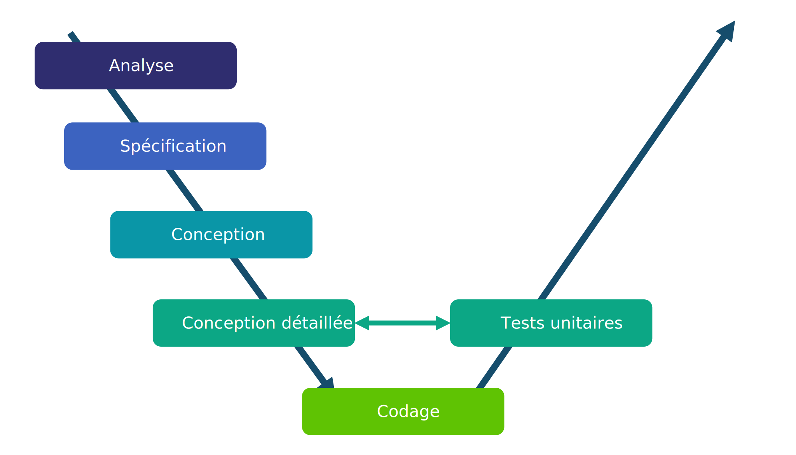
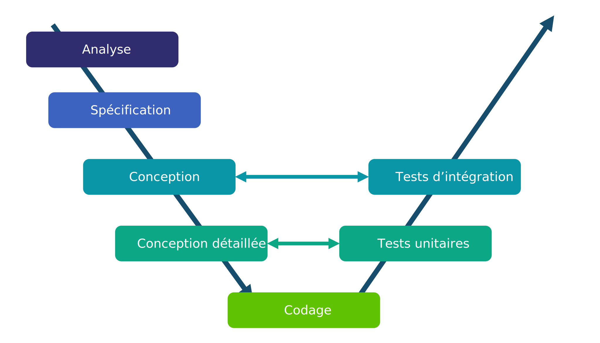
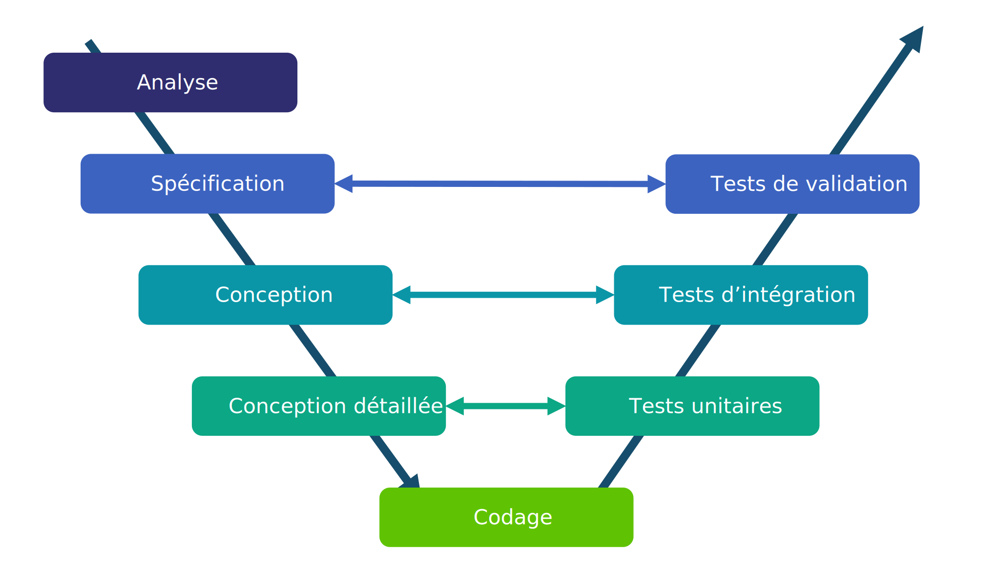
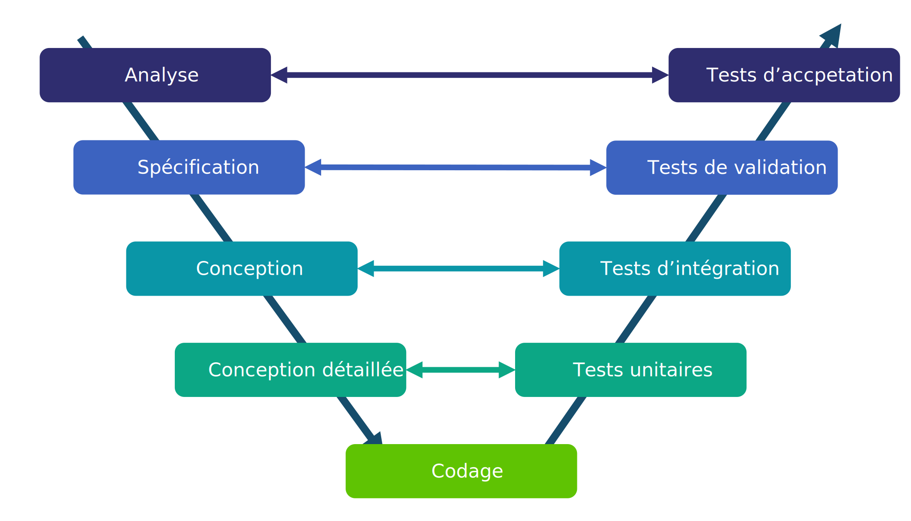
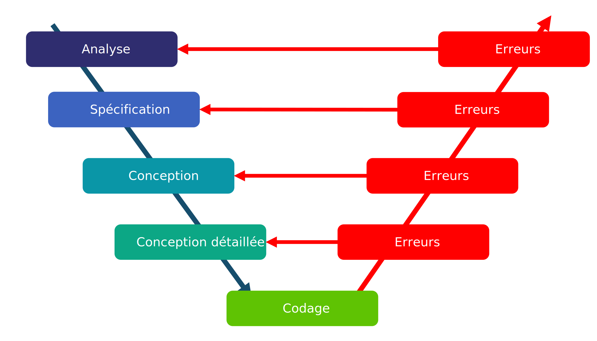
Des erreurs possibles à toutes les étapes du développement.
Logiciels critiques
-
Une défaillance dans un logiciel peut avoir
des conséquences
catastrophiques (humaines, financières, ...). - Exemple du calculateur de bord d'Ariane 5

Situations à éviter !!!
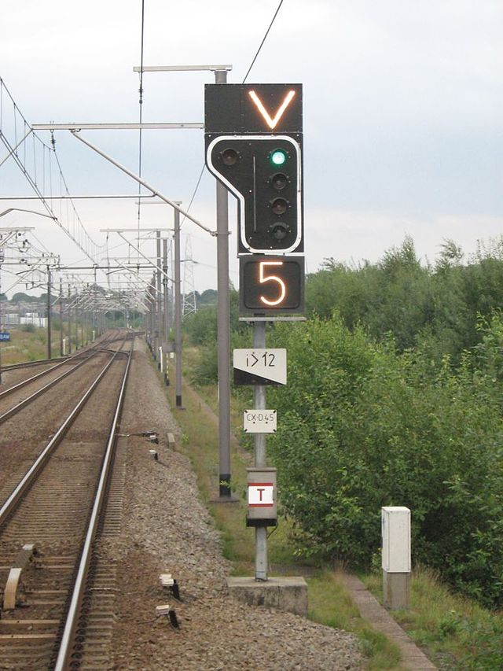
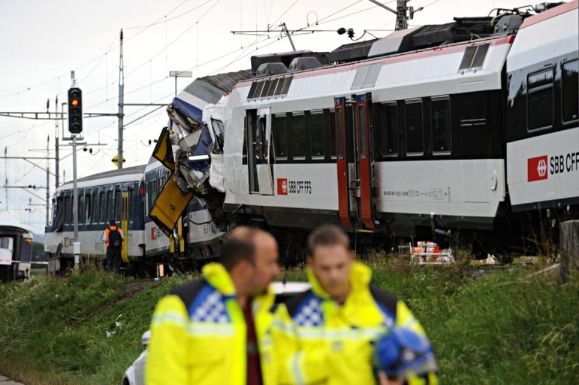
Solutions
- Les règles et les techniques de programmation.
- Le support des langages de programmation.
- Les méthodologies de conception
et de développement. - Le test.
-
Les méthodes formelles
- méthodes d'ingénierie basées sur
des approches mathématiques utilisées pour développer
et analyser des systèmes (logiciels). - démarche globale (langages et outils
de vérification).
- méthodes d'ingénierie basées sur
des approches mathématiques utilisées pour développer
La place des méthodes formelles
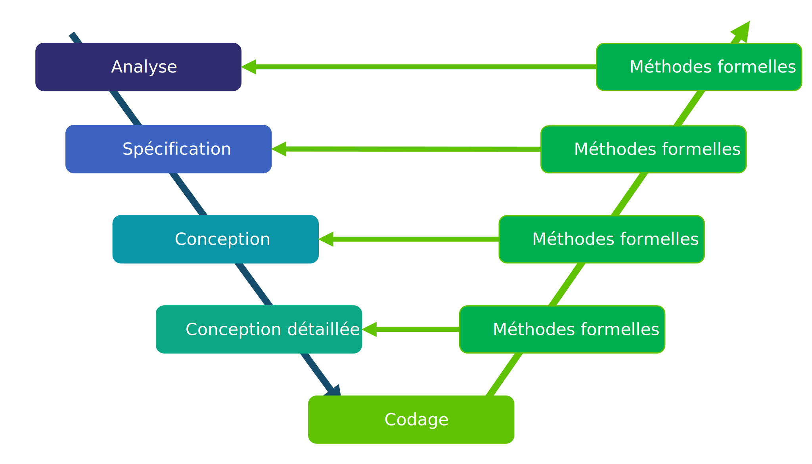
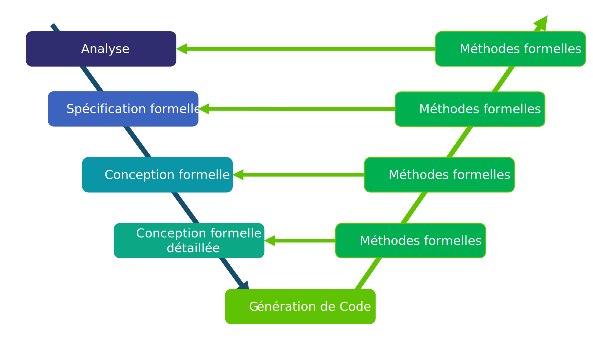
Utiliser les méthodes formelles dans toutes les étapes.
spécification, conception
et vérification
-
La spécification formelle $\to$ description rigoureuse et non ambiguë
du comportement attendu d'un système (logiciel).- modèle mathématique décrivant ce que doit faire le système (logiciel).
- modélisation par un langage mathématique (syntaxe, logique, sémantique...).
-
La conception formelle $\to$ description rigoureuse et non ambiguë
de la réalisation du système (logiciel).- modèle mathématique décrivant la construction du système (logiciel).
- modélisation par un langage mathématique (syntaxe, logique, sémantique...).
- La Vérification formelle $\to$ démontrer mathématiquement qu'un système (logiciel)
respecte les exigences identifiées dans la spécification.
- démonstration que la conception correspond bien à la spécification.
- simulation, preuve de théorèmes, model checking...
Conclusion
Une analyse utilisant les méthodes formelles peut fournir la preuve
que le système est complet et correct vis à vis de ses exigences.
que le système est complet et correct vis à vis de ses exigences.
Qui recommande
les méthodes formelles ?
| Secteur/Domaine | Norme principale | Brève description |
|---|---|---|
| Ferroviaire (rail) |
EN 50128 $\to$ EN 50716 (2023) | Logiciels de contrôle : SIL ; agile, modélisation, IA/ML (2023) |
| Ferroviaire (rolling stock) |
EN 50657 (2017) | Logiciels embarqués sur matériel roulant |
| Ferroviaire (cybersécurité) |
CLC/TS 50701 (2021) | Spécification pour sécurité IT/OT (données/opérations) dans le ferroviaire |
| Aéronautique | DO-178C/ED-12C | Logiciels avioniques - cycle complet et certification |
| Industrie générique/sécurité | IEC 61508 | Cadre générique pour sécurité fonctionnelle (cycle de vie + SIL) |
| Automobile | ISO 26262 | Sécurité fonctionnelle pour véhicules |
| Dispositifs médicaux | IEC 62304 (EN 62304) | Logiciel médical : cycle de vie, maintenance, gestion des risques |
Exemples de normes $\to$ ferroviaire
- EN 50128 Software for railway control and protection system
- norme européenne très connue pour les logiciels critiques dans le ferroviaire
- EN 50657:2017
- logiciel embarqué dans le matériel roulant (rolling stock)
- EN 50716:2023 (remplaçant EN 50128)
- introduit des approches itératives (agile), l'usage de modèles (UML, SysML), voire l'intégration de l'IA/ML dans le cycle de développement
- CLC/TS 50701:2021
- spécification axée sur la cybersécurité dans les applications ferroviaires
Exemples de normes $\to$ ferroviaire
Les méthodes formelles
recommandées
- Quelques méthodes formelles recommandées par les normes :
- "CSP, HOL, LOTOS, Temporal Logic, B Method, Model Checking ..."
- page 103 de la norme EN 50128
Quelques acteurs utilisant
les méthodes formelles
Evaluation Assurance Level (EAL)
selon les Critères Communs
- EAL1 $\to$ testé fonctionnellement (les risques sont faibles)
- Vérifications basiques, sans grande analyse de conception.
- EAL2 $\to$ testé structurellement (une certaine sécurité sans forte menace)
- Analyse de conception limitée + vérifications fonctionnelles.
- EAL3 $\to$ testé et vérifié méthodiquement (des risques modérés)
- Vérification méthodique de la conception et des tests
- EAL4 $\to$ conçu, testé et vérifié méthodiquement (banques, administrations...)
- Analyse approfondie de la conception, documentation détaillée, vérifications...
- EAL5 $\to$ conçu de façon semi-formelle et testé (systèmes sensibles aux attaques)
- Introduction de méthodes semi-formelles dans la conception.
- EAL6 $\to$ conception vérifiée de façon semi-formelle et système testé (défense)
- Analyse poussée avec vérifications de sécurité avancées.
- EAL7 $\to$ conception vérifiée formellement et système testé (produits militaires)
- Niveau le plus strict : preuves formelles et exhaustives.
Evaluation Assurance Level (EAL)
selon les Critères Communs
En pratique
- EAL4 $\to$ est souvent le niveau maximum recherché dans le commerce
(bon compromis coût/sécurité). - EAL5 à EAL7 $\to$ concernent des systèmes de défense, gouvernementaux
ou infrastructures critiques.
Quelques mythes
- L'utilisation des méthodes formelles produit un logiciel parfait ?
non-sens , une spécification formelle est un modèle du monde réel- peut inclure des erreurs, des omissions et des malentendus
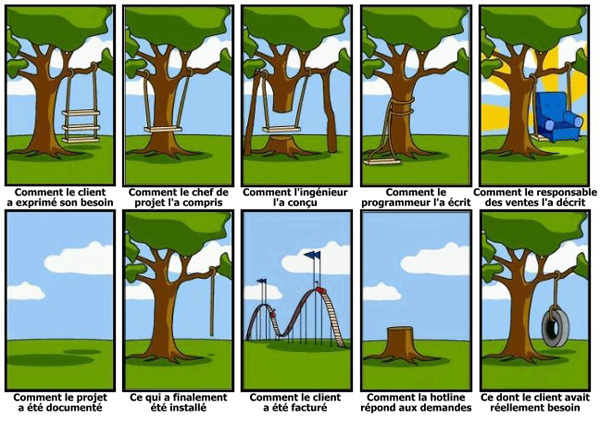
Quelques mythes
- Utiliser les méthodes formelles $\approx$ faire de la preuve de programme ?
- la modélisation d'un système est valable sans vérification de programmes
- la spécification formelle force à
une analyse détaillée du système
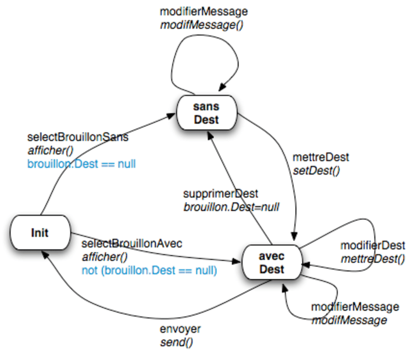
Quelques mythes
- Les méthodes formelles que pour les systèmes critiques ?
- l'expérience industrielle montre que les coûts de développement
sont réduits pourtous les types de systèmes .
(IHM multimodales, microservices, validation de données, ...)
- l'expérience industrielle montre que les coûts de développement
Quelques mythes
- Les méthodes formelles sont uniquement pour les mathématiciens ?
non-sens , les mathématiques employées sont élémentaires.
Quelques mythes
- Les méthodes formelles augmentent les coûts de développement ?
non-prouvé , il y a un déplacement des coûts vers les premières étapes.
Quelques mythes
- Les clients ne peuvent pas comprendre les spécifications formelles.
- il faut les paraphraser en langage naturel, ou utiliser
le prototypage .
- il faut les paraphraser en langage naturel, ou utiliser

Le cadre de la ST


L'objectif de la ST
Comment exprimer (modéliser) et vérifier
les propriétés comportementales des systèmes critiques ?
les propriétés comportementales des systèmes critiques ?
Cette ST va vous aider à répondre à cette question !!!
L'objectif de la ST est-il claire
pour tout le monde ?
Planning
Lundi 15 septembre 2025 - Amphi sa.108, Bouygues| 08h15 - 09h45 | Présentation de la séquence thématique |
| Idir AIT-SADOUNE (CentraleSupelec) | |
| 10h00 - 11h30 | Séminaire |
| Guillaume GIRAUD (RTE) |
Planning
Lundi 22 septembre 2025 - Amphi sa.108, Bouygues| 08h15 - 09h45 | Séminaire |
| Michel BATTEUX (Systemic Intelligence) | |
| 10h00 - 11h30 | Séminaire |
| Sayed MOHAMED-SALIH (IKOS Consulting) |
Planning
Mardi 23 septembre 2025 - Amphi sa.108, Bouygues| 08h15 - 09h45 | Présentation des EIs |
| Idir AIT-SADOUNE (CentraleSupelec) | |
| 10h00 - 11h30 | Séminaire |
| Émeric TOURNIAIRE (ClearSy) |
La synthèse des séminaires
- Rédaction d'un résumé de 10 lignes maximum pour chaque séminaire.
- à téléverser sur la page de la ST disponible sur EDUNAO,
- 4 résumés attendus pour chaque étudiant,
- une évaluation sera effectuée par l'enseignant,
- une attention particulière sera portée à la clarté des résumés.
- Validation du module Contexte et Enjeux :
- présence obligatoire à tous les séminaires,
- disponiblité des 4 résumés sur EDUNAO pour chaque étudiant,
- validation de la compétence C2 :
"développer ses compétences dans un domaine d'ingénieur et dans un métiers"
Disponiblité des résumés sur EDUNAO avant le mercredi 08/10/2025
à 23h59
Le programme
Conception et vérification de systèmes critiques
| Les logiques temporelles | Idir AIT SADOUNE (CentraleSupelec) |
| 3 CMs, 2 TDs ($5 \times 1h30$) | |
| Le Model Checking | Paolo BALLARINI (CentraleSupelec) |
| 1 CMs, 1 TDs ($2 \times 1h30$) | |
| Les automates temporisés | Lina YE (CentraleSupelec) |
| 2 CMs, 2 TDs, 1 TP ($6 \times 1h30$) | |
| Les modèles stochastiques | Paolo BALLARINI (CentraleSupelec) |
| 2 CMs, 2 TDs, 1 TP ($6 \times 1h30$) |
Organisation du cours
- Date de début $\to$ lundi 15/09/2025 à 15h30.
- Cours $\to$ vérifier régulièrement votre EDT
- TD $\to$ présence récommandée
- TP $\to$ présence obligatoire (
TP noté à finir à la maison et à rendre)
- Polycopie, slides, énoncés des TD/TP, corrections des TD/TP
en versions PDF disponibles dans Edunao. - Polycopie en version papier
- disponible après sondage sur les demandes
- contient plus d'informations que ce qui sera vu en cours.
Les EI - enseignements
d'intégration
Présentation des sujets et des détails de l'organisation des EIs
le mardi 23/09/2025 à $8h15$.
le mardi 23/09/2025 à $8h15$.
Validation de la ST
- La ST5 valide une Unité d'Enseignement (UE)
Séquence Thématique dédiée
à la modélisation fonctionnelle et la régulation. - L'évaluation est constituée des activités suivantes :
- modules contexte et enjeux : 0.2 ECTS,
- cours automatique et contrôle : 2.5 ECTS,
- cours modélisation système : 2 ECTS,
- cours spécifique : 2.5 ECTS,
- enseignement d'intégration (EI) : 1.8 ECTS.
- Pour valider une UE, un élève doit obtenir une note $\geq$
10/20
à chacune des activités constituant l'UE. - L'EI est un cas particulier et doit être validé par une note $\geq$ 12/20.
Evaluations
- Module contexte et enjeux
- la présence et l'évaluation des résumés de séminaires.
- Cours spécifique
- la présence et la réalisation des deux TP
- l'examen écrit prévu le Jeudi 13/11/2025 à $8h00$ (une durée de $1h30$).
- les sujets d'examens seront en français et en anglais.
- les élèves peuvent composer dans la langue de leur choix.
- Enseignement d'Intégration
- la note sera détaillée lors de la présentation des EIs.
L'évaluation des compétences
La ST5 évalue les compétences C1, C2, C4, C6 et C7.
- Module contexte et enjeux
- C2 $\to$ Développer ses compétences dans un domaine d'ingénieur
et dans un métiers
- C2 $\to$ Développer ses compétences dans un domaine d'ingénieur
- Cours spécifique
- C1 $\to$ Analyser, concevoir et réaliser des systèmes complexes
- C1.2 $\to$ l'examen écrit : utiliser et développer les modèles adaptés,
choisir la bonne échelle de modélisation et les hypothèses pertinentes - C1.4 $\to$ le TP : spécifier, réaliser et valider un système complexe
- C1.2 $\to$ l'examen écrit : utiliser et développer les modèles adaptés,
- C1 $\to$ Analyser, concevoir et réaliser des systèmes complexes
- Enseignement d'Intégration
- C4 $\to$ Avoir le sens de la création de valeur pour son entreprise et ses clients
- C6 $\to$ Être opérationnel, responsable et innovant dans le monde numérique
- C7 $\to$ Savoir convaincre
Organisation des rattrapages
- Module contexte et enjeux
- si un résumé n'est pas rendu $\to$ c'est
FAIL en C2. - si absence non justifiée à un séminaire $\to$ c'est
FAIL en C2. - si
FAIL $\to$ un oral de 15 minutes est organisé.
- si un résumé n'est pas rendu $\to$ c'est
- Cours spécifique
- si le TP n'est pas rendu $\to$ c'est
FAIL en C1. - si absence non justifiée au TP $\to$ c'est
FAIL en C1. - si la note éxamen écrit $\leq$ 10 $\to$ c'est
FAIL en C1. - si la note éxamen écrit $\leq$ 7 $\to$ un rattrapage est programmé.
- si le TP n'est pas rendu $\to$ c'est
- Enseignement d'Intégration
- si la note $<$ 12 $\to$ un rattrapage est programmé.
- la validation des C$_i$ est définie par le responsable de l'EI.
Dominante Informatique
et Numérique en 3A
Mention : Science du Logiciel
https://wdi.centralesupelec.fr/infonum-sl/
Responsable : Frédéric BOULANGER
frederic.boulanger@centralesupelec.fr
https://wdi.centralesupelec.fr/infonum-sl/
Responsable : Frédéric BOULANGER
frederic.boulanger@centralesupelec.fr